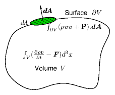
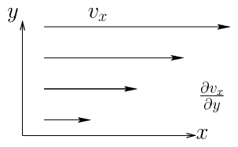
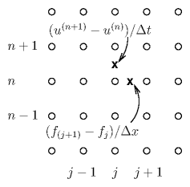
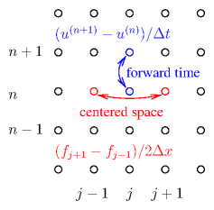
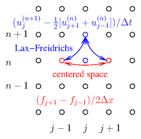

In section 4.1.1 we introduced the continuity or
mass-conservation equation of fluid flow.
∂ρ
∂t
+∇.(ρv) = S.
(7.1)
Now we want to discuss the second important equation governing fluid
dynamics, the momentum conservation
equation. Like mass conservation, momentum conservation simply
identifies all the sources of momentum within a particular volume V
and the fluxes of momentum inward across the boundary ∂V of
that volume, and sets their sum equal to the rate of change of the
total momentum in the volume. Momentum is of course a vector quantity
whose density (momentum per unit volume) is ρv. The total
rate of change of momentum is the integral of this quantity over the
volume.
The sources of momentum within a
volume consist of any body forces that might be acting upon the
fluid. This, of course, is what Newton's second law of motion tells
us. Rate of change of momentum is equal to force. However, like the
momentum, the force must be expressed in terms of force
density, F, the force per unit volume
acting on the fluid. For example, gravity gives rise to
a force per unit volume ρg, where g is the
gravitational acceleration vector (downwards on earth). Or again, if
the fluid is electrically charged with a charge
density ρq, then
the body force density arising from an electric field E is
ρqE. The force density F is the sum of all such
forces that happen to be present. There might be none.
The flux of momentum across the surface is the more tricky part. Some of that
flux arises because of fluid motion. The fluid momentum, density
ρv, is being carried along, "convected", with the fluid
at velocity v. Consequently, across any stationary surface
element dA there is a convective flux of momentum equal to
ρvv.dA. We may therefore identify the
convective momentum flux density as the quantity
whose dot product with dA gives the flux across dA. It
is ρvv, which is a
tensor (or dyadic in this notation), it
has two sets of coordinate indices, and can be thought of as a
3×3 matrix:
ρvv = ρvi vj = ρ
⎛ ⎜ ⎜
⎜ ⎝
v1v1
v1v2
v1v3
v2v1
v2v2
v2v3
v3v1
v3v2
v3v3
⎞ ⎟ ⎟
⎟ ⎠
.
(7.2)
In addition to this convective momentum flux, carried by the local
mean fluid velocity, there may be momentum flux that arises from other
effects. One such effect is pressure. Another is viscosity. Another
(in non-Newtonian fluids like gels or of course solids) might be
shear
stress arising from elasticity. All of these can be lumped together
into another tensor that is usually called simply the stress
tensor, or the pressure
tensor. We'll write it P. It is
a 3×3 matrix with coefficients Pij. We assume that just as
F is the sum of all possible body force densities, P
is the sum of all non-convective momentum flux densities.

Figure 7.1: Integral of momentum flux density across the boundary surface
∂V is equal to minus the integral of rate of change of
momentum minus force density over the volume V. The momentum
flux density includes convective flux and stress tensor parts.
The conservation of momentum is then
∂
∂t
⌠ ⌡
V
ρv d3x =
⌠ ⌡
V
F d3x −
⌠ ⌡
∂V
(ρvv +P).dA.
(7.3)
applied to an arbitrary volume and surface, as illustrated in Fig. 7.1.
Just as with mass conservation, we can use Gauss's
divergence theorem
to turn the surface integral into a volume integral, and gather the
terms together:
⌠ ⌡
V
∂
∂t
(ρv) − F +∇.(ρvv+P) d3x = 0.
(7.4)
This equation must hold for any volume V, and the only way for that
to be true is for the integrand to be zero everywhere:
∂
∂t
(ρv) − F +∇.(ρvv+P)=0.
(7.5)
This is the general form of the fluid momentum conservation equation.
If we know what P is, then this equation is enough to solve
for v. But really we are in the same situation as we were with
the continuity equation. There, we could solve the equation for
ρ, but only if we knew v. Now we've got an equation for
v, but it depends upon knowing P. Intuitively you can
see that this heirarchical process might go on for ever. We can get an
equation for P from the conservation of energy, but
that equation will contain a third-order tensor governing the energy
flux (conduction etc.). Solving for that requires yet another
equation, and so on. In general, to get a soluble problem we have to
call a halt at some point - a process called
"closure". How and
when we do that decides what sort of fluid equations we end up with.
This closure generally invokes a "constitutive
relation" between a
property such as stress and the other variables of the fluid such as
density or velocity gradient.
The kinds of fluids we encounter most in everyday life are
isotropic. They have no intrinsically preferred
direction. There are fluids that are anisotropic,
for example plasmas or other electrically conducting fluids in
magnetic fields. But for now we set them
aside. Isotropic fluids generally give rise to nearly
symmetric stress tensors P. It is then
helpful to separate out the total stress tensor into a part that is
simply a scalar p times the unit matrix I (that's the
isotropic part), and a part σ that has zero
trace,
i.e. the sum of its diagonal elements is zero
∑ i
σii=0
. Thus we write P=pI+ σ. Then p
is the pressure.

Figure 7.2: The transfer in the y-direction of x-momentum arises
from the rate of strain dvx/dy. The rate of strain tensor is
the symmetric generalization of this form.
The traceless stress tensor σ
for simple fluids arises from viscosity, which relates stress to the
rate of strain tensor, see Fig. 7.2. The rate of strain tensor
is
1/2
⎛ ⎝
∂vi
∂xj
+
∂ vj
∂xi
⎞ ⎠
. And σ is proportional to
its traceless part
σij = μ
⎡ ⎣
⎛ ⎝
∂vi
∂xj
+
∂ vj
∂xi
⎞ ⎠
−
2
3
∇.v δij
⎤ ⎦
= μ
⎡ ⎣
((∇v)+(∇v)T) −
2
3
(∇.v)I
⎤ ⎦
ij
.
(7.6)
The constant of proportionality, μ is the (shear)
viscosity. Here (∇v) is a
tensor (dyadic) whose transpose is indicated with a superscript
T. Substituting this expression into the general momentum
conservation equation gives what is called the Navier-Stokes
equation.
∂
∂t
(ρ v)+∇.(ρvv) = −∇.(pI+σ)+F = −∇p −μ∇2v−
1
3
μ∇(∇.v) + F.
(7.7)
The closure for the pressure (and viscosity) must generally be
determined by equations of state relating pressure, p, to density, ρ. For example
for an ideal isothermal gas p ∝ ρ. Liquids
have an equation of state that amounts approximately to
incompressibility,
ρ = const., and they generally have zero volumetric source S. For
such a fluid, the continuity equation shows that the velocity
divergence is zero, ∇.v=0. The divergenceless fluid
momentum equation is then simpler.
∂
∂t
(ρ v)+∇.(ρvv) = −∇p −μ∇2v + F.
(7.8)
And of course if viscosity and body forces are negligible it becomes
even simpler yet.
The left hand side of these equations is often
rewritten using the continuity equation with S=0 to demonstrate
∂
∂t
(ρ v)+∇.(ρvv) = ρ
⎛ ⎝
∂
∂t
v+v.∇v
⎞ ⎠
.
(7.9)
Then the second form is recognized as ρ times the convective
derivative ∂/∂t + v.∇ of
v. However, the first form is what is called "conservative"
form, and it is by far the better form to use
for discrete representation and numerical solution on fixed meshes.
7.2 Hyperbolic Equations
Fluid equations are generally hyperbolic.
Let's start our analysis of such hyperbolic equations by
considering a problem where body force is zero; sources are zero;
viscosity is zero; pressure is related to density by an adiabatic law
p ρ−γ=const.; and the configuration is one-dimensional in
space. This is governed then by the following equations.
Continuity:
∂ρ
∂t
+
∂
∂x
(ρv)
=
0
Momentum:
∂
∂t
(ρv)+
∂
∂x
(ρv2)
=
−
∂
∂x
p
State:
pρ−γ
=
const.
(7.10)
These are three equations for three unknowns ρ, v, and
p. They represent a
compressible fluid (gas) in a pipe, for
example. We can eliminate p immediately by writing
p=p0ργ/ρ0γ. To retain the conservation
properties, we regard the density, ρ, and momentum
density, ρv = Γ, as the independent variables, in which
case the equations become
∂ρ
∂t
=
−
∂Γ
∂x
∂Γ
∂t
=
−
∂
∂x
(Γ2/ρ+(p0/ρ0γ)ργ)
.
(7.11)
We might well want to solve these nonlinear equations
numerically. They are now expressed in a form that is actually the
same for all types of fluid conservation equations:
∂u
∂t
= −
∂f
∂x
.
(7.12)
In our particular case
u =
⎛ ⎜
⎜ ⎝
ρ
Γ
⎞ ⎟
⎟ ⎠
, andf =
⎛ ⎜
⎜ ⎝
Γ
Γ2/ρ+(p0/ρ0γ)ργ
⎞ ⎟
⎟ ⎠
(7.13)
are the state vector and the flux
vector respectively. Since the flux vector is a
function of the state vector, we can use the chain rule to write the
equations as
∂u
∂t
= −
∂f
∂ u
∂u
∂x
= −
∑ m=1,M
∂f
∂ um
∂um
∂x
= −J
∂u
∂x
.
(7.14)
Here, the Jacobian matrix
J=∂f/∂u has size M×M=2×2 and is explicitly
J =
⎛ ⎜
⎜ ⎝
0
1
−Γ2/ρ2+γ(p0/ρ0γ)ργ−1
2Γ/ρ
⎞ ⎟
⎟ ⎠
.
(7.15)
The Jacobian matrix quite generally embodies the differential equation
by relating time-derivates to space-derivatives of the state vector,
through eq. (7.14):
∂u
∂t
= −J
∂u
∂x
.
Writing for convenience
Γ/ρ = v, and γ(p0/ρ0γ)ργ−1=cs2,
the eigenvalues of J are then solutions of
⎢ ⎢
⎢ ⎢
−λ
1
−v2 +cs2
−λ+ 2v
⎢ ⎢
⎢ ⎢
= λ2 − 2v λ+v2 − cs2=0,
(7.16)
which are
λ = v ±cs.
(7.17)
For small density perturbations, cs2=γ(p0/ρ0γ)ργ−1 ≈ γp0/ρ0, which
gives the usual definition of the (small-amplitude) sound speed
cs=
√
γp0/ρ0
.
The fact that the eigenvalues are real is a
demonstration that the system of equations is
hyperbolic. The
eigenvalues indicate the speed of
propagation of disturbances. In this fluid they propagate at the speed
of sound measured in the rest-frame of the fluid.
7.3 Finite Differences and Stability
Now let's consider possible finite difference representations of the
equations. We notice that the
simplest time differences give the time derivative
(u(n+1)j−u(n)j)/∆t effectively at time
n+1/2 but position j, and the simplest space difference gives a derivative
(f(n)j+1−f(n)j)/∆x at position
j+1/2. These expressions don't line up with one another so if we use
them, we'll certainly have only first order accuracy. See Fig. 7.3.

Figure 7.3: Derivatives in time (n) and space (j) implemented as
finite differences give rise to values at the half-mesh points
x.
We could try to
fix that by taking centered derivatives; but it turns out that may
make things worse. The scheme may become unstable. But how do we
analyse stability for this fluid? We have multiple
coupled dependent
variables. How do we deal with that?
The answer, in summary, is that we find the combinations of dependent
variables that behave in a way that is approximately uncoupled from
the other combinations of dependent variables - in other words, the
characteristic modes of the system. Then we analyse the Von
Neumann stability of those modes separately.
If the Jacobian matrix is independent of position, then it is possible
to change the dependent variables to new combinations of variables,
each of which is uncoupled from the other
combinations42. The new combination to use consists of the
eigenvectors of the matrix J.
Let's illustrate this with our fluid. Consider the
eigenvalues λ = v±cs. For each eigenvalue,
the eigenvector, which is the solution of the
homogeneous equation (J−λI)e=0, must give
zero when multiplied by any of the rows of the combined matrix
(J−λI). Using the top row, which becomes (−[v±cs],1) we find that the eigenvector is proportional to
e± =
⎛ ⎜
⎜ ⎝
1
v±cs
⎞ ⎟
⎟ ⎠
(7.18)
Now we can express any vector state as the sum of two coefficients
q± times the two eigenvectors43u=q+e++q−e− or written out
⎛ ⎜
⎜ ⎝
ρ
Γ
⎞ ⎟
⎟ ⎠
= q+
⎛ ⎜
⎜ ⎝
1
v+ cs
⎞ ⎟
⎟ ⎠
+q−
⎛ ⎜
⎜ ⎝
1
v− cs
⎞ ⎟
⎟ ⎠
.
(7.19)
[The coefficient values are q±=[ρ(v±cs)−Γ]/(±2cs) but we don't need to know that.] The quantities q±
can be considered to be the coefficients of the new
vector representation
q=
⎛ ⎝
q+
q−
⎞ ⎠
, by which
the state can be expressed.
Then the result of multiplying u by the Jacobian matrix can be
written in terms of the new set of q-coefficients as follows,
Ju=q+Je++q−Je− = q+λ+e++q−λ−e− .
(7.20)
This shows that the vector of eigenvalue coefficients giving
Ju is
⎛ ⎝
q+λ+
q−λ−
⎞ ⎠
. So
in terms of the new q-representation
-
J
q =
⎛ ⎝
q+λ+
q−λ−
⎞ ⎠
=
⎛ ⎜
⎜ ⎝
λ+
0
0
λ−
⎞ ⎟
⎟ ⎠
⎛ ⎜
⎜ ⎝
q+
q−
⎞ ⎟
⎟ ⎠
.
(7.21)
In this q-representation, the operator J, is represented by
a different matrix
-
J
which is
diagonal having coefficients
equal to the eigenvalues. Consequently the equations governing the
evolution of the coefficients q of the eigenvectors separates
into two independent equations
∂q±
∂t
= −λ±
∂q±
∂x
,
(7.22)
in place of the previously coupled equations governing u.
This process is totally general and will work for vectors of any
dimensionality, corresponding to any order differential
equations. We can now analyse each scalar equation
separately for stability. Recognize, though, that the eigenvalues are
not necessarily uniform in space, therefore this separation of
the equations applies really only locally. So the stability analysis
we now do is an approximate local analysis, not a precise global
analysis.
7.3.1 FTCS is unstable
A forward time centered space difference scheme might spring to mind
as a natural one, illustrated in Fig. 7.4.

Figure 7.4: Forward derivative in Time (n) and Centered in Space (j) (FTCS)
finite differences give rise to an unstable scheme for hyperbolic problems.
For stability
analysis purposes, we can suppose that
we are using the new representation (in other words u stands for
each q which we can consider separately in scalar equations).
But we
don't actually do the transformation to that new representation when
implementing the scheme (only when analysing its stability). The first
time through we'll do things explicitly but then take short cuts
thereafter not bringing q in explicitly. We write
out the difference equation as
u(n+1)j−u(n)j = −
∆t
2∆x
(f(n)j+1−f(n)j−1) = −
∆t
2∆x
J(u(n)j+1−u(n)j−1),
(7.23)
which in the new representation is
q(n+1)j−q(n)j = −
∆t
2∆x
λ(q(n)j+1−q(n)j−1)
(7.24)
and consider a single spatial Fourier mode of u and f and hence of q
qj = q exp(ikx j∆x), fj = f exp(ikx j∆x) .
(7.25)
Substituting for the spatial dependence, the advancing equation becomes
q(n+1)j = [1−
∆t λ
2∆x
(eikx ∆x − e−ikx∆x) ]q(n)j = [1−i
∆t λ
∆x
sin(kx ∆x)]q(n)j.
(7.26)
Now we see immediately that the temporal amplification factor is
A = 1−i
∆t λ
∆x
sin(kx ∆x).
(7.27)
Because the second term is imaginary, the magnitude of the
amplification factor is always greater
than 1, regardless of the (real) value of λ. All modes are
unstable, growing with time! FTCS does not work for hyperbolic
equations.
7.3.2 Lax-Friedrichs and the CFL condition
One tiny change works to stabilize the scheme. That is to replace
u(n)j on the left hand side of eq. (7.23) with
(u(n)j−1+u(n)j+1)/2, as illustrated in Fig. 7.5.

Figure 7.5: Forward derivative in Time (n) but from the mean of the
adjacent points and Centered in Space (j) is the Lax Friedrichs
finite difference scheme, which is stable provided ∆t ≤ ∆x/|λ|.
This is then called the
Lax-Friedrichs method.
u(n+1)j−(u(n)j−1+u(n)j+1)/2 = −
∆t
2∆x
(f(n)j+1−f(n)j−1) = −
∆t
2∆x
J(u(n)j+1−u(n)j−1).
(7.28)
The student should verify that replacing J with λ for
a scalar version of these equations, the resulting
amplification factor is
A = cos(kx∆x)−i
∆t λ
∆x
sin(kx ∆x).
(7.29)
As kx varies, this is the equation of an ellipse in the complex plane. For
stability, this ellipse must be entirely inside the unit circle, which
requires the imaginary coefficient's magnitude to be less than or equal to 1
∆t ≤ ∆x/|λ| .
(7.30)
For our fluid example this is ∆t ≤ ∆x/|v±cs|.
Equation (7.30) is called the
Courant-Friedrichs-Lewy (CFL) condition. It applies to essentially all explicit
schemes for hyperbolic equations. It says that ∆t must be less
than the time it takes for influence to propagate at the
characteristic speed(s) (given by the eigenvalues of J) from
the prior adjacent nodes. If it were greater, then influence from
other nodes, not taken into account in the difference scheme, would
influence the solution.
7.3.3 Lax-Wendroff achieves second order accuracy
The low order errors of the Lax-Friedrichs scheme make it of little
practical value. It has a substantial level of spurious
numerical diffusion
that damps out perturbations that should
not be damped. For example the simple fluid we've used to illustrate
the issues has no physical dissipation, yet for some modes
Lax-Friedrichs gives |A| substantially less than one. They are
damped. A better scheme, which is second order in time and still stable, is the
Lax-Wendroff scheme. The advance is implemented in two steps:
Figure 7.6: The Lax-Wendroff two-step scheme first (dashed lines)
generates u and hence f values at the half-time-step n+1/2,
by a Lax-Friedrichs advance to (X). Then it uses a centered time,
centered space full step advance based upon f(n+1/2),
from the u(n).
The first step is like a Lax-Friedrichs half-step to the half-way
positions. Then the fluxes are evaluated again, at the half-step
times and positions using the u(n+1/2) values, to find the
f(n+1/2). Those are used in the second step to advance all
the way from n to n+1 in a properly centered manner.
The amplification factor for the combined step can be shown to be
A = 1 − i
∆t λ
∆x
sin(kx∆x) +
⎛ ⎝
∆t λ
∆x
⎞ ⎠
2
[cos(kx∆x)−1]
(7.33)
which gives stability if
∆t |λ|
∆x
≤ 1
: the CFL
condition, the same as before.
There are several other schemes in regular use for solving first order
hyperbolic problems to second order
accuracy. They practically all use
multi-step approaches like the Lax-Wendroff method.
Worked Example. Stability of Lax-Wendroff scheme.
Derive the amplification factor for the
Lax-Wendroff scheme and verify the stability condition
∆ t|λ|
∆x
≤ 1
.
Start with the formula for the first time half-step: eq. (7.31). For stability analysis (but not in implementing an
actual numerical scheme), approximate the Jacobian matrix locally as
uniform, and substitute f = Ju at all the required
mesh positions,
deriving
u(n+1/2)j+1/2
=
1
2
(u(n)j+1+u(n)j) −
∆ t
2∆x
J(u(n)j+1−u(n)j)
=
1
2
⎡ ⎣
(I−
∆t
∆ x
J)u(n)j+1+(I+
∆ t
∆x
J)u(n)j
⎤ ⎦
.
(7.34)
Similarly, the second half-step can be written:
u(n+1)j = u(n)j −
∆t
∆ x
J(u(n+1/2)j+1/2−u(n+1/2)j−1/2).
(7.35)
Substitute for the half-step values from eq. (7.34) to find:
u(n+1)j − u(n)j
=
−
∆t
2 ∆x
J
⎡ ⎣
(I−
∆t
∆x
J)u(n)j+1+(I+
∆ t
∆x
J)u(n)j
−(I−
∆t
∆ x
J)u(n)j−(I+
∆t
∆ x
J)u(n)j−1
⎤ ⎦
(7.36)
=
−
∆t
2 ∆x
J
⎡ ⎣
(u(n)j+1−u(n)j−1)−
∆t
∆x
J(u(n)j+1−2u(n)j+u(n)j−1)
⎤ ⎦
.
Now we consider an eigenmode of J, so we can substitute
the eigenvalue λ for J, everywhere in the above expression.
And we consider a spatial Fourier mode, for which uj ∝ eikxj∆x. The equation can then be written
u(n+1)j − u(n)j = −
∆t
2 ∆x
λ
⎡ ⎣
(eikx∆x−e−ikx∆x)+
∆t
∆ x
λ(eikx∆x−2+e−ikx∆x)
⎤ ⎦
u(n)j,
(7.37)
or in other words
u(n+1)j =
⎧ ⎨
⎩
1−
∆tλ
∆x
isin (kx∆x) +
⎛ ⎝
∆t λ
∆x
⎞ ⎠
2
[cos(kx∆x)−1]
⎫ ⎬
⎭
u(n)j.
(7.38)
The coefficient of u(n)j is the amplification factor,
A.
Its squared absolute value is
|A|2
=
⎧ ⎨
⎩
1+
⎛ ⎝
∆t λ
∆x
⎞ ⎠
2
[cos(kx∆x)−1]
⎫ ⎬
⎭
2
+
⎧ ⎨
⎩
∆ tλ
∆x
sin( kx∆x)
⎫ ⎬
⎭
2
=
1 +
⎛ ⎝
∆t λ
∆x
⎞ ⎠
2
[2cos (kx∆x)−2+sin2(kx∆x) ]
+
⎛ ⎝
∆t λ
∆x
⎞ ⎠
4
[cos(kx∆x)−1]2
(7.39)
=
1+
⎡ ⎣
−
⎛ ⎝
∆t λ
∆x
⎞ ⎠
2
+
⎛ ⎝
∆t λ
∆x
⎞ ⎠
4
⎤ ⎦
[cos(kx∆x)−1]2.
Thus |A|2 ≤ 1 provided
∆t |λ|
∆x
≤ 1
, which
is the stability criterion.
7.4 Worked Example: Three-dimensional fluids
Formulate a finite difference representation of the hyperbolic
equations for a source-free, inviscid, isotropic fluid in three-dimensions
plus time, when the equation of state is p=p(ρ). Assume the
eigenvalue of the Jacobian of the linearized system (perturbation
propagation speed) is known, λ, and that the eigenmode is
longitudinal; deduce the condition governing the stable explicit timestep
for centered spatial differences on a uniform cartesian grid spaced unequally
in the different axis directions.
We use the density ρ and the flux density Γ
as the elements of the state vector u. In 3-dimensions, a
vector quantity like
Γ has three components, Γα, α = 1,2,3. So the state vector has a total of
four.
u =
⎛ ⎜
⎜ ⎝
ρ
Γ
⎞ ⎟
⎟ ⎠
=
⎛ ⎜ ⎜ ⎜
⎜ ⎜ ⎝
ρ
Γ1
Γ2
Γ3
⎞ ⎟ ⎟ ⎟
⎟ ⎟ ⎠
(7.40)
The continuity (7.1) and
momentum (7.5) equations are written with the time and space differentials
separated on the left and the right hand sides, and we replace
ρv everywhere with Γ.
∂ρ
∂t
=−∇.(ρv)=−∇.Γ,
(7.41)
∂Γ
∂t
= −∇.(ρvv) −∇p = −∇.(ΓΓ/ρ− Ip).
(7.42)
In 3-dimensions, these are four scalar equations in total. The
combined state-space form is
∂u
∂t
= − ∇. f,
(7.43)
where
∇.=
∑ α
^
x
α
.
∂
∂xα
, the
spatial-3-vector divergence, operates separately on each of the four
(3-vector) entries of the state-space column-vector
f =
⎛ ⎜ ⎜ ⎜ ⎜
⎜ ⎜ ⎜ ⎝
Γ
ΓΓ1/ρ+ p
^
x
1
ΓΓ2/ρ+ p
^
x
2
ΓΓ3/ρ+ p
^
x
3
⎞ ⎟ ⎟ ⎟ ⎟
⎟ ⎟ ⎟ ⎠
=
⎛ ⎜
⎜ ⎝
Γ
ΓΓ/ρ+ pI
⎞ ⎟
⎟ ⎠
.
(7.44)
The spatial discrete difference
scheme may be written in terms of three cartesian indices i, j,
k, of the mesh, as
∇. f
=
^
x
1
2∆x1
. (f(n)(i+1)jk−f(n)(i−1)jk) +
^
x
2
2∆x2
. (f(n)i(j+1)k−f(n)i(j−1)k)
+
^
x
3
2∆x3
. (f(n)ij(k+1)−f(n)ij(k−1)).
(7.45)
We are told that the eigenvalue of the state system is λ and
the eigenmode is longitudinal44. Therefore, for a plane wave
proportional to exp(ik.x) that is an eigenmode of the
state, each state-component of f is oriented in the
spatial-direction k. Write the unit vector
^
k
=(
^
k
1
,
^
k
3
,
^
k
3
)
, and
k=k
^
k
. Then for this plane wave we can replace each
^
x
α
. f
with
λ
^
k
α
u
to obtain
∇.f =
1
2
⎡ ⎢
⎣
λ
^
k
1
∆x1
(u(n)(i+1)jk−u(n)(i−1)jk) −
λ
^
k
2
∆x2
(u(n)i(j+1)k−u(n)i(j−1)k) −
λ
^
k
3
∆x3
(u(n)ij(k+1)−u(n)ij(k−1))
⎤ ⎥
⎦
.
(7.46)
Substituting for the variation of u with spatial index, e.g. (u(n)ij(k+1)−u(n)ij(k−1)) =exp(ik3∆x3)−exp(−ik3∆x3) = 2isin(k3∆x3), this form reduces
the finite difference equations to
u(n+1)ijk−u(n)s = −∆t ∇.f = −
∑ α
i∆tλ
^
k
α
∆xα
sin(k
^
k
α
∆ xα) uijk,
(7.47)
where u(n)s denotes the mesh expression used for the
current time (n). For example, a
Lax-Friedrichs choice u(n)s=1/6(u(n)(i−1)jk+u(n)(i+1)jk+u(n)i(j−1)k+u(n)i(j+1)k+u(n)ij(k−1)+u(n)ij(k+1)) leads to an
amplification factor
A =
∑ α
⎡ ⎢
⎣
1
3
cos(k
^
k
α
∆xα)−
i∆tλ
^
k
α
∆xα
sin(k
^
k
α
∆xα)
⎤ ⎥
⎦
.
(7.48)
We require |A|2 ≤ 1 for all modes to avoid instability. The
worst case for stability occurs when all
^
k
α
∆xα
have the same value, which we'll denote
∆ = (
∑ α
1/∆xα2)−1/2
.
Avoiding instability in this case requires that
∆t |λ|
∑ α
^
k
2 α
^
k
α
∆xα
=
∆t |λ|
∆
≤ 1.
(7.49)
Notice, by considering k∆ = π/2, that the criterion must be
satisfied for stability, regardless of
the precise form chosen for us, so long as that form is
symmetric in each coordinate direction, and hence gives rise to a real
contribution to A. The criterion is thus universally necessary for any
symmetric centered spatial difference scheme, when time differences
are explicit, but it is not always sufficient.
When all the ∆xα are equal, then ∆ = ∆x/√3, and the CFL condition for stability when v
is small (so λ = cs) is
∆t ≤
∆x
cs√3
. If, by contrast, for some direction β, ∆xβ is much smaller than the other two grid spacings, then
∆ ≈ ∆xβ and stability requires
∆t ≤
∆xβ
cs
.
Exercise 7. Fluids and Hyperbolic Equations.
1. Prove equation 7.29, the amplification factor for the Lax
Friedrichs scheme.
2. Consider an isothermal gas in one dimension. It obeys the equations
Continuity:
∂ρ
∂t
+
∂
∂x
(ρv)
=
0
Momentum:
∂
∂t
(ρv)+
∂
∂x
(ρv2)
=
−
∂
∂x
p
State:
p
=
ρ(kT/m)
with kT/m simply a constant equal to the ratio of the temperature in
energy units to the gas molecule mass m.
(a) Convert this into the form of a state and flux vector equation
∂u
∂t
= −
∂f
∂x
.
where
u =
⎛ ⎜
⎜ ⎝
ρ
Γ
⎞ ⎟
⎟ ⎠
is the state vector (Γ = ρv) and you should give the flux
vector f.
(b) Calculate the Jacobian matrix
J=∂f/∂u.
(c) Find its eigenvalues.
3. Find the finite difference form and CFL stability when the linearized
eigenmode is longitudinal with eigenvalue λ, for the
Lax-Wendroff scheme in two space-dimensions.